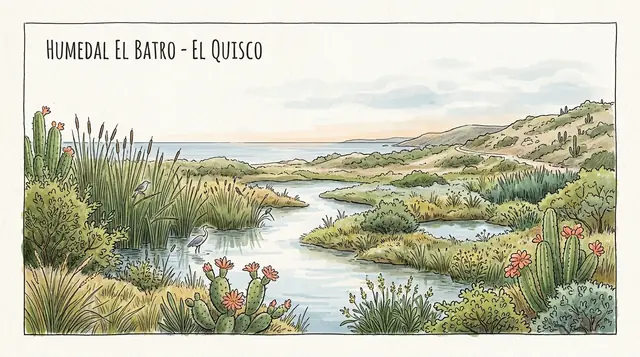

Humedal y bosque nativoHumedal El Batro
Un humedal urbano protegido, a pasos de la costa.
El Humedal Urbano El Batro fue reconocido por el Ministerio del Medio Ambiente el 29 de septiembre de 2025, a solicitud de la Municipalidad de El Quisco.
Abrir ficha de Humedal El Batro